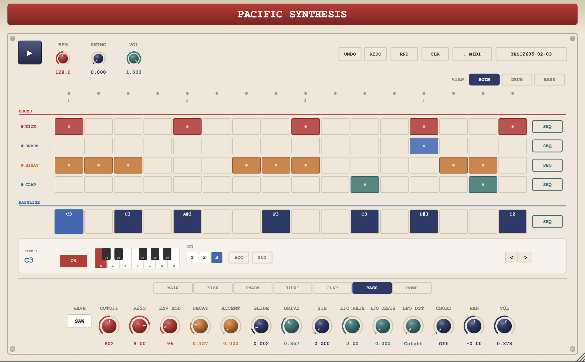

16-step Sequencer
内蔵シーケンサ。ホスト同期 + スタンドアロン再生に対応。
A lo-fi drum & bass synthesizer with a built-in 16-step sequencer. 303 風ベース + 808/909 系ドラム。16ステップ・シーケンサ内蔵の Lo-fi シンセ。

Pacific Synthesis — 16-step sequencer, 303 bass, analog-style drums
内蔵シーケンサ。ホスト同期 + スタンドアロン再生に対応。
ladder filter + accent + slide + sub-osc + drive + LFO。
Kick / Snare / HiHat (Closed + Open) / Clap。
Delay (テンポ同期) + Reverb + Distortion (2x oversampled)。
VCA 風 Master Bus Compressor + Kick→Bass ダッキング。
ファイル保存 or DAW トラックへドラッグ&ドロップ。
Free and open source. Grab the latest build, or compile from source.
無料・オープンソース。GitHub からバイナリ取得、またはソースからビルド可能。
Pacific Synthesis is made by Coast Machine — a dub techno & open-source audio project from the west coast of Japan. Heavy, dark, hypnotic; and the tools built to make that sound.
日本海側から Dub Techno とオープンソースの音楽ツールを作るソロプロジェクト。 音源は Bandcamp にて。